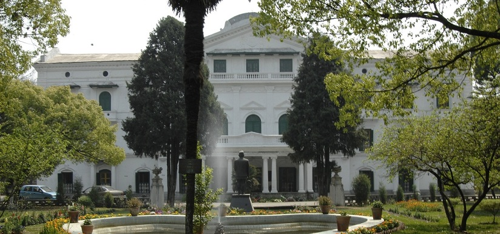

Welcome to Pulchowk Campus
Pulchowk Campus, located in Lalitpur, Nepal, is the central campus of the Institute of Engineering (IOE) under Tribhuvan University. Established in 1972, it is renowned for its excellence in engineering education and research, producing skilled professionals who contribute globally.
Academics
Pulchowk Campus offers a wide range of undergraduate, graduate, and doctoral programs in various engineering disciplines, including:
- Civil Engineering
- Electrical Engineering
- Mechanical Engineering
- Computer Engineering
- Electronics, Communication and Information Engineering
- Architecture
The campus is known for its rigorous academic standards, experienced faculty, and state-of-the-art laboratories, ensuring students receive a world-class education.
Facilities
Pulchowk Campus provides top-notch facilities to support academic and extracurricular activities, including:
- Advanced laboratories for research and practical learning
- A central library with extensive resources
- Hostel accommodations for students
- Sports facilities and recreational areas
- High-speed internet and IT infrastructure
Contact Us
Get in touch with Pulchowk Campus for more information:
Address: Pulchowk, Lalitpur, Nepal
Phone: +977-1-5521317
Email: info@ioe.edu.np
Website: pcampus.edu.np